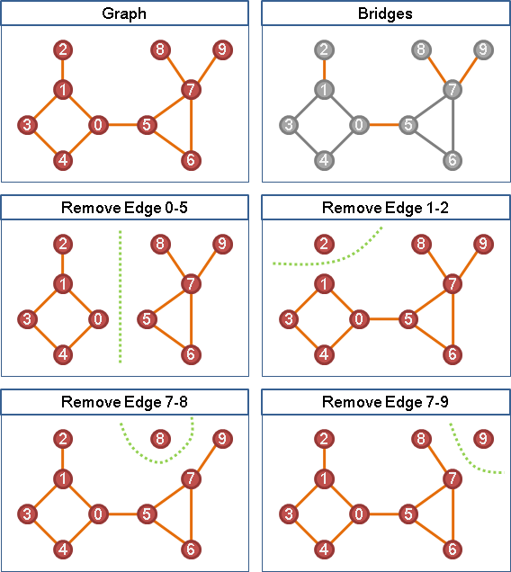
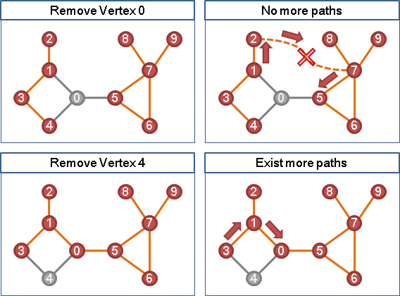
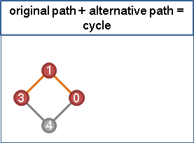
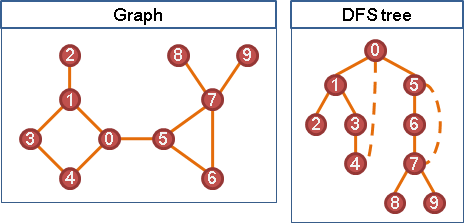
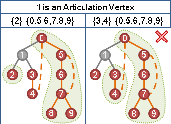
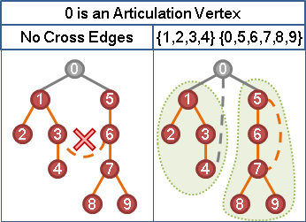
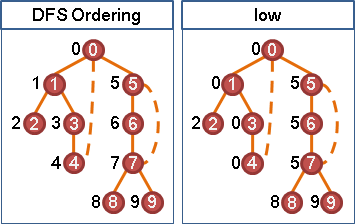
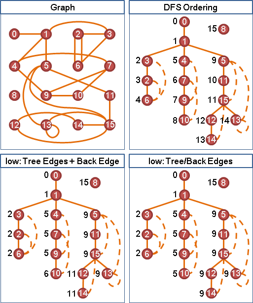

Articulation Vertex / Bridge
我可以往，彼可以來，曰通；通形者，先居高陽，利糧道以戰，則利。《孫子》
Articulation Vertex（Articulation Point）（Cut-vertex）
Articulation乃「關節」之意，骨骼與骨骼銜接的地方就是關節。關節一旦被拆開，肢體之間的連繫就被切斷了。
「關節點」是讓一張無向圖維持連通，不可或缺的點。只要從一張無向圖上移除了關節點（以及與之相連的邊），就會讓這張圖分離成更多部分，呈現不連通的狀態。

Bridge（Cut-edge）
中文稱作「橋」。只要從一張無向圖上移除了橋，就會讓這張圖分離成更多部分，呈現不連通的狀態。
無向圖，尋找所有的Articulation Vertex
要判斷一個點是不是關節點，只要從圖上移除此點，再看看圖是否連通就好了；要判斷連通，可以使用任何一種Graph Traversal演算法。
每一個點都用一次Graph Traversal來判斷是不是關節點，逐一試驗圖上每一個點，總共執行V次的Graph Traversal就可以找出全部的關節點了。V為圖上的點數。
這個演算法簡單易懂又容易實作。不過接下來要介紹更快的方法。
原本路線＋替代路線＝環
移除一個點之後，經過此點的路線被截斷了。要是沒有替代路線，無法繞過點，就會不連通，此點就是關節點。反過來說，如果有替代路線，此點就不是關節點。
原本路線和替代路線，併在一起看，又可以想做是一個環。也就是說：找的到環，就找的到替代路線，可以繞過關節點；找不到環，就找不到替代路線，繞不過關節點。
要在一張圖上找替代路線不太直覺，但是找環就比較直覺了──把圖重新畫成樹的形狀，就容易找環了！要把圖重新畫成樹的形狀，利用Graph Traversal就行了。這裡就利用一下DFS tree吧！
利用DFS tree
任取樹上的一個點。當此點的祖先、此點的子孫想要互通有無，利用tree edge的話，顯然會經過此點；不想利用tree edge的話、不想經過此點的話，就必須利用back edge了。
另外，在DFS tree之中，此點的子樹們之間沒有邊。因此只需要考慮祖先與每一棵子樹之間有沒有back edge。
祖先與每一棵子樹之間都有back edge，則此點不是關節點；祖先與其中一棵子樹之間缺少back edge，則此點就是關節點。
樹根不能套用上述規則，因為樹根沒有祖先。然而樹根更容易判斷是不是關節點。
樹根的子樹們想要互通有無，只能經過樹根。因此當樹根有兩棵以上的子樹，或者說，有兩個以上的小孩，則樹根一定是關節點。
實作時，想要判斷祖先與子孫，可以運用DFS的遍歷時刻。
無向圖，尋找所有的Articulation Vertex
時間複雜度為遍歷的時間複雜度。圖的資料結構為adjacency matrix，便是O(V^2)；圖的資料結構為adjacency lists，便是O(V+E)。
運用遞迴實作，整合程式碼。
方才的程式碼，如果讓trace[]改為存入遍歷時刻，而不是點的編號，那麼程式碼可以再縮短一點點。
UVa 315 10199
low的意義
low的意義是：不斷往下走tree edge，最後走一次back edge，所能觸及的最高祖先。
low也可以修改成：不斷往下走tree edge、往上走back edge，所能觸及的最高祖先。修改不會影響結果，而且可以精簡程式碼！
無向圖，尋找所有的Bridge
方法類似於尋找關節點。只需要特別當心兩點之間有多條邊的情況。多重邊當中，有一條是tree edge，其餘都是back edge。
UVa 796 610 12783